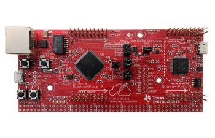
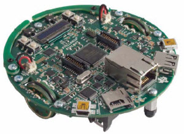
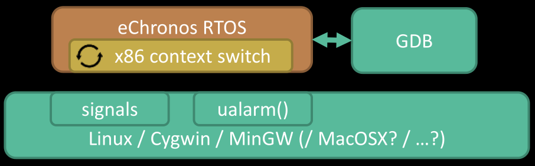
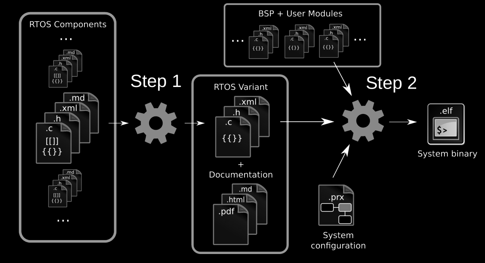

What is an RTOS?
Real Time Operating System
FreeRTOS (very common)
Simba OS (arduino)
Useful when
Question about who's used an RTOS in their projects before, and why.
Why is eChronos interesting?
High-assurance
Miniscule overhead
*model-checking for adherence to our specification without unintended side-effects (abstract, not code-level). 'Progress' proofs would be even nicer, perhaps a future project
eChronos variants
Variant Scheduler Mutexes & Semaphores Signals & Interrupts Timers
Acamar Explicit
No
No
No
Gatria Round-robin
Yes
No
No
Kraz Round-robin
Yes
Signal-only
No
Acrux Round-robin
Yes
Interrupt-only
No
→ Rigel Round-robin
Yes
Yes
Yes
Kochab Priority
Yes
Yes
Yes
Phact Priority (Ceil)
Yes
Yes
Yes
Intended for μcontrollers
Tiny amounts of RAM. Talking KB, not GB!
Trade-offs...
No MMU or multicore support
No POSIX API
No dynamic memory management
No device drivers
ARMv7m
Cortex-M3 to Cortex-M7
Funky hardware...
EFM32TG110 - 32 MHz, 32K RAM, ~$2.00 (Cortex-M3)ATSAMS70 - 300 MHz, 2MB RAM, ~$20.00 (Cortex-M7)
Of course, devboards...
Dev boards

 TI Connected Launchpad, TI Evalbot, STM32F4 Discovery
Platforms & platforms
• PowerPC
• Proprietary 8051
• 32-bit x86 (POSIX) user-space
Allows testing eChronos applications natively under Linux!

How it fits together...

1. Constructing a minimal OS
Only include the features you need
The RTOS has 7 different OS variants .
What is a variant? From the source of
x.py:
'acrux': [Component('stack', pkg_component=True),
Component('context-switch', pkg_component=True),
Component('sched-rr', {'assume_runnable': False}),
Component('interrupt-event', {'timer_process': False}),
Component('simple-mutex'),
Component('error'),
Component('task'),
...
]
Component('sched-rr', {'assume_runnable': False}),
Component('simple-mutex'),
Component('task'),
Have a look at
x.py from line 163 onward
Normally, you don't need to create your own.
What about the OS documentation? It's generated, too!
2. Project files (.prx)
Declare how your firmware will be structured. Example:
<system>
<modules>
<module name="tiva_lwip.http_server" />
<module name="tiva_lwip.armv7m.vectable">
<flash_load_addr>0x0000000</flash_load_addr>
<preemption>true</preemption>
...
<external_irqs>
<external_irq>
<number>40</number>
<handler>lwIPEthernetIntHandler</handler>
</external_irq>
...
</external_irqs>
</module>
<module name="tiva_lwip.armv7m.rtos-kochab">
...
<tasks>
<task>
<name>ethernet_interrupt_task</name>
<function>ethernet_interrupt_task</function>
<priority>14</priority>
<stack_size>8192</stack_size>
</task>
...
</tasks>
<semaphores>
<semaphore>
<name>lwip_aux_sem_1</name>
</semaphore>
</semaphores>
...
Extremely quick slide. Here's a module, here's a task, here's a semaphore.
Point out the top module which demonstrates how C plays with these.
<external_irq>
<number>40</number>
<handler>lwIPEthernetIntHandler</handler>
</external_irq>
...
<task>
<name>ethernet_interrupt_task</name>
<function>ethernet_interrupt_task</function>
<priority>14</priority>
<stack_size>8192</stack_size>
</task>
...
<semaphore>
<name>lwip_aux_sem_1</name>
</semaphore>